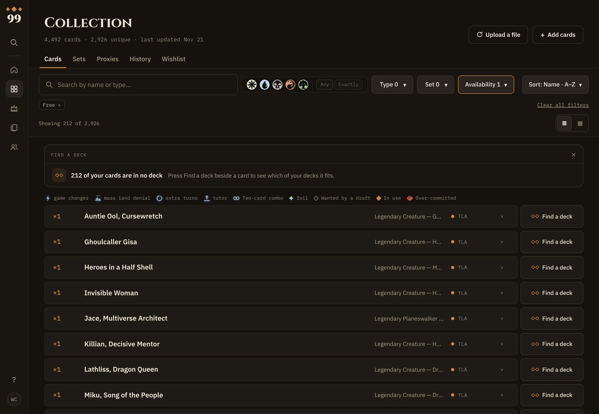
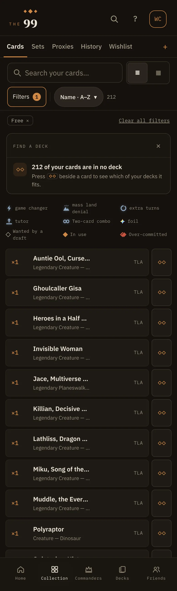
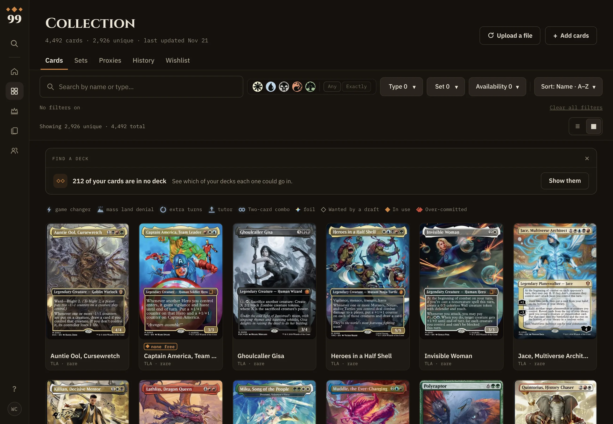
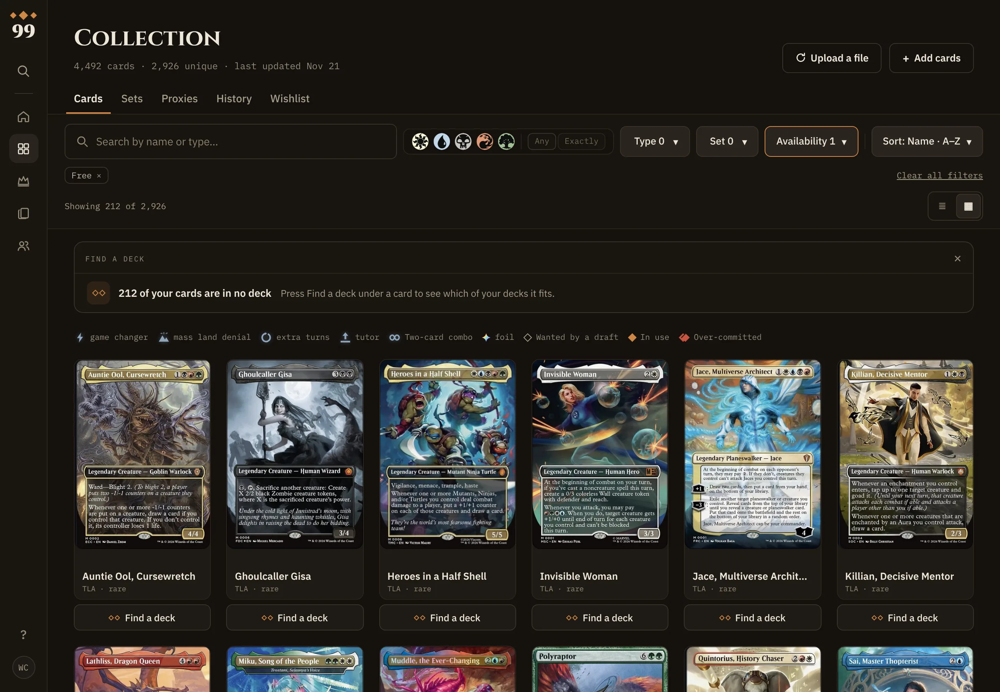
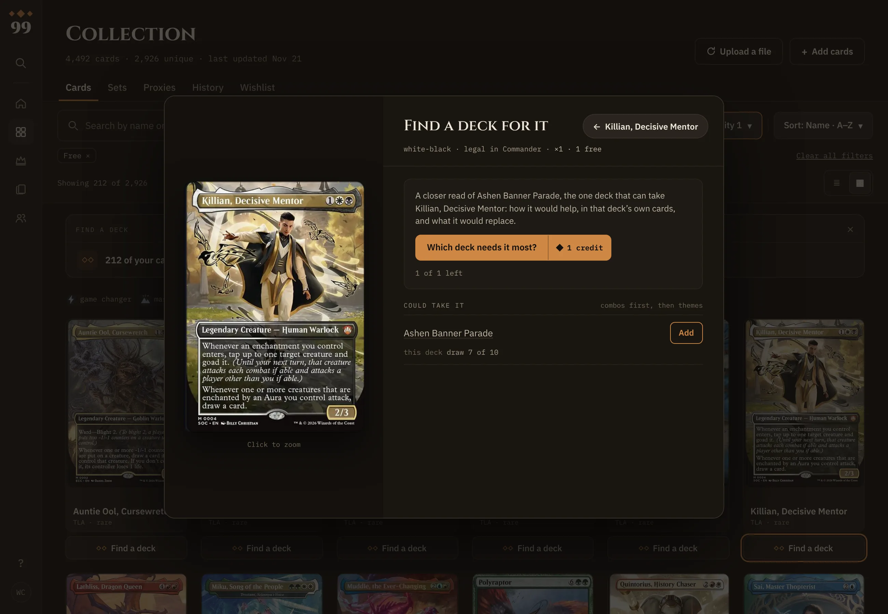
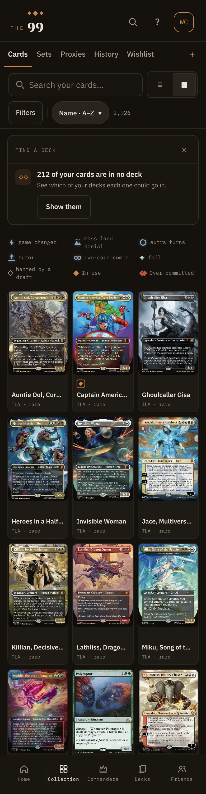
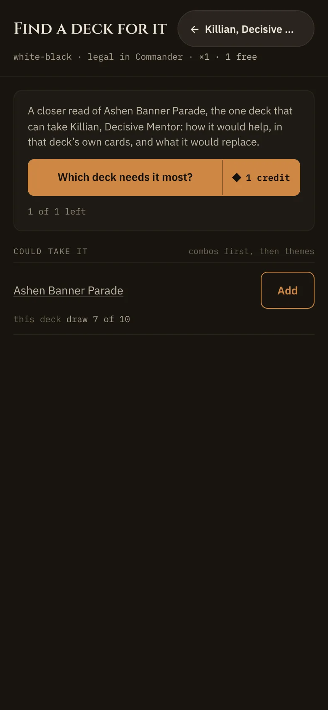

Q1 · How a player finds the deck a card fits (R3)
/collection's Cards tab. F0 the call-out on All, its Show them applying the shipped Availability: Free. F1 narrowed to Free, a Find a deck button under each tile (approved R2). R1 the row view, new in R3: the button beside each row. F2 the button opens Find a deck straight (shipped view, Killian, one deck fits).

R1 · Rows, desktop
Glyph and word, 136px, the row's height.

R1 · Rows, phone (the phone's default)
44px, the glyph alone; the call-out draws the glyph it names.

F0 · All
The call-out with Show them; no buttons on All.

F1 · Free
The Free chip as shipped; a labelled button under each tile.

F2 · The button opens Find a deck
The card window straight on the view; ← the card goes to its details.

F0 · All
Show them under the line, 44px.

F1 · Free
Names keep their whole line; the button sits under the tile.

F2 · Find a deck
The phone card window, on the view.